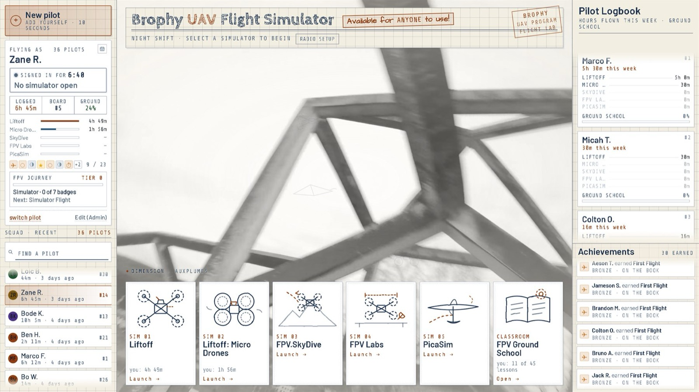
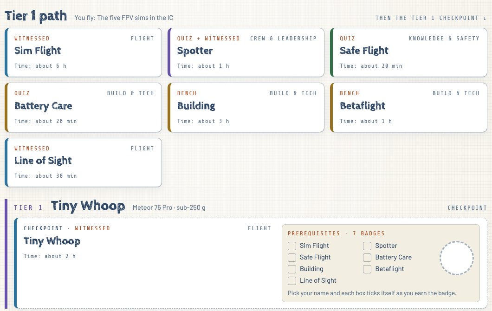

The club's two simulator kiosks, its badge path, and the tools mentors use to run it all
form one system. Its job is to make the first flight easy and every step after it
small, visible and checkable. This brief covers how the system works and why that helps students learn.
It doesn't cover what they learn.
38pilots signed up
105 hflown in the sims
18flew in the last 7 days
20 + 4badges + bonus badges
43lessons · ~2.7 h total
01The kiosk: nothing between a student and a first flight

The kiosk home screen. Left: who's flying, their hours and their place on the badge path.
Centre: the five simulators and the Ground School lessons. Right: this week's hours board and recent achievements.
Walk up and fly. Students enter a first name and last initial. There are no accounts or
passwords and nothing to install. Adding a new pilot takes about ten seconds.
Five simulators, one button each. Each sim launches straight from the home screen.
One radio setup screen maps any club transmitter into all five sims, so a student never has to
open a game's settings menu.
Hours are tracked fairly and automatically. The clock starts only once the sim has
actually opened, pauses when nobody is touching the sticks, and stops when the pilot leaves.
Everyone gets a turn. A session clock turns amber at 15 minutes and asks the pilot to
hand over. An RGB light ring on the desk shows the same thing, so a pilot can see it with
goggles half on.
It's just a flight lab. The PC is locked down to the kiosk. It opens and closes
on the lab's schedule and restarts itself after a crash.
Why it mattersPractice hours are what make a pilot, and every login screen or
settings menu costs some of them. Because starting takes no effort, students fly between classes.
Visible progressEach pilot sees their hours by sim and their next badge.
The whole room sees the weekly board. Seeing small gains keeps students coming back.
Crashes are freeThe simulator is where students build muscle memory and make
their mistakes. That way the club's real drones are only flown by pilots who have already shown control.
One pilot record everywhere
Both kiosks sync with each other every minute, and the same record appears on the club website
(elmagoct.github.io/brophy-uav-dashboard). There students can check whether the lab is open, see the hours board, and follow
the full badge path from any phone. Progress follows the student, not the machine.
Brophy UAV Flight LabOctober 2026 · 1 / 3
02Badges: a path with no dead ends
Twenty badges are grouped into four tiers. Each tier ends in a checkpoint, a real flight
that unlocks the next, larger aircraft. Before a checkpoint, a student must hold the tier's other badges,
so moving up always means being ready to move up. Four bonus badges (Editing, Tuning, Fleet Steward,
Mentor) can be earned in any order, so students can grow in other directions too.
Tier 0SimulatorThe five FPV sims
Sim Flight · Spotter · Safe Flight · Battery Care · Building · Betaflight · Line of Sight
CHECKPOINT Tiny Whoop: first real flight
Tier 1Tiny WhoopMeteor 75 Pro · sub-250 g
Soldering · Electrical Components · Radio Protocol · Field Diagnostics · Freestyle Flight
CHECKPOINT Pavo 20 Pro Flight
Tier 2Full-sizePavo 20 Pro · Cinebot 35 · 5-inch
FAA TRUST · Event Ops · Cinematography · Indoor Proximity · Racing
CHECKPOINT Event Pilot: fly at a school event
Tier 3Event PilotAny Tier 2 airframe, with a spotter
The top of the path. Event Pilots fly at school events and, with the Mentor badge, check others'
flights and coach them.
FOUR TRACKS Flight · Build & tech · Knowledge & safety · Crew & leadership
Three ways to earn a badge, matched to what is being learned
Quiz
Knowledge
Short lessons at the kiosk or on a phone, then a 10-question quiz drawn at random from a pool.
A score of 80% earns the badge automatically. Retakes are unlimited and the questions change
each time, so students learn the material, not the answer key.
Bench
Hands-on builds
A step-by-step checklist the student ticks off at the workbench. It ends with a photo of the finished
work, taken on the website. A mentor reviews the photo and passes it or sends it back to be redone.
Witnessed
Flying & crew skills
A mentor watches the student do the skill and signs it off against a written standard that everyone
can read in advance. Some badges, such as Spotter and Event Ops, need a passed quiz and a sign-off.
Built-in learning choices
Simulator before hardware. Students need 5 sim hours before a mentor will judge Sim Flight.
The kiosk counts the hours, so the rule enforces itself.
Spotter comes first. New members help others fly safely before they fly real
hardware themselves, so they start out as members of the team.
Every badge shows a time estimate (20 minutes to about 6 hours), so a student can
always choose a next step that fits the time they have.
Practice that uses the real transmitter. Flight-prep lessons include on-screen stick drills
that read the club's radios, the same controls students use in the sims.
Progress only moves forward. Earned badges, passed quizzes and logged hours survive any
curriculum change. Every badge also links to tips and vetted resources.

Pilot Path on the club website. Each badge card shows how it is earned, its track and a time estimate.
Checkpoints list their prerequisites, and each box ticks itself as the student earns the badge.
Posters on the wall. Four 11×17 trail-map posters above the simulators lay out the same path. Each
badge card on them says what to do, how it is checked and why it matters, and a QR code opens the
student's live progress. The map, the website and the kiosk all follow one badge list, so they never disagree.
Brophy UAV Flight LabOctober 2026 · 2 / 3
03The admin side: mentors spend their time teaching
The system handles the record-keeping, so the adults and student leaders running the lab can spend
their time watching students fly and giving feedback.
How a badge gets signed off
StudentSees the next badge on the kiosk or website and reads the standard it will be checked against.
PracticeLessons, drills and sim hours. Quizzes are scored on the spot.
MentorWatches the flight or reviews the bench photo, then taps Pass or Approve.
RecordThe badge appears on both kiosks, the website and the poster QR within minutes.
Instructor console (any browser)
Review photos. Bench submissions wait in a queue. A mentor passes each one or sends it back
to be redone.
Approve a badge. Selecting a pilot loads their whole path. The console warns if a
prerequisite is missing, for example if the quiz half of a quiz-and-sign-off badge hasn't been passed. An approval
made too early is kept on file and counts once the requirement is met.
Who holds what. A grid of every pilot and badge, so mentors can see who is ready
for a checkpoint.
Run the room remotely. Leaders can check either kiosk's status, open the lab outside
normal hours, send a pilot home, restart a kiosk or publish the website.
Safeguards
Only leaders can award badges. Every console command is signed with the instructor password.
The kiosks reject any command that doesn't verify, and the password itself is never stored or sent.
Students can't change records. Exiting the kiosk or editing a pilot needs the instructor password,
and repeated wrong guesses lock it out for longer each time.
Little personal data is kept. The system stores a first name and last initial only.
The public site shows names, hours and badges. Quiz scores, attempts and timings stay private.
Data survives power cuts. Hours are saved every 30 seconds, and the previous copy is
kept for recovery.
Who does what
Role
Responsibilities in the system
Student pilot
Flies, takes lessons and quizzes, submits bench photos, and spots for others from their first week.
Mentor
A Tier 2 pilot with deep knowledge of the FAA rules, approved by an officer. Watches witnessed badges, reviews bench photos, and stays alert for anything unsafe or illegal at the field.
Club officers
Appoint mentors, run the instructor console and keep the lab's hours up to date.
School IT
Has a written handover document covering what the kiosk changes on a school PC, how to exit it and how to remove it.
Built to lastThe software runs on the school's existing PCs with nothing to
install and no subscription. The badge list lives in one file and is fully documented,
so the system won't depend on any one student after they graduate.
How the grant fits inThe kiosks, lessons and badge path
are already running. The grant pays for the real drones the upper tiers are built around,
so a student's sim hours lead to real checkpoint flights that a mentor signs off.